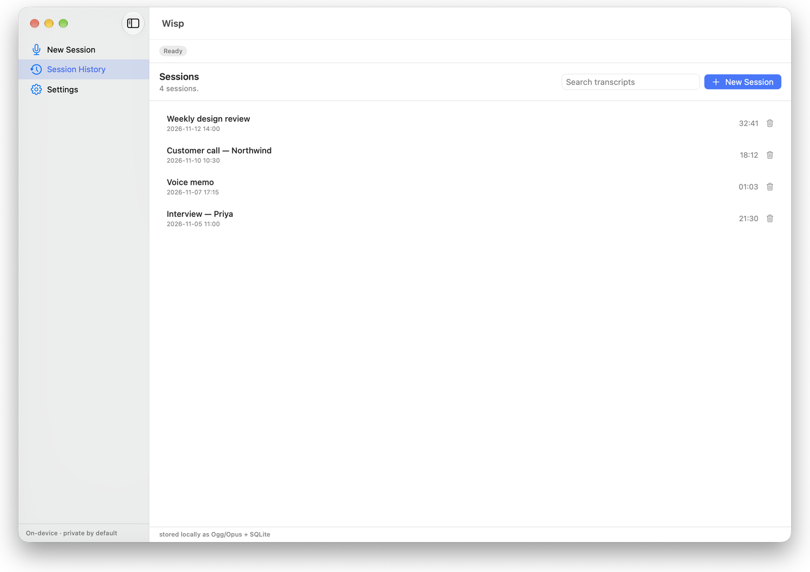
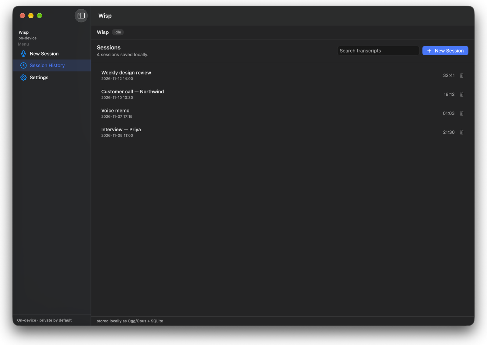
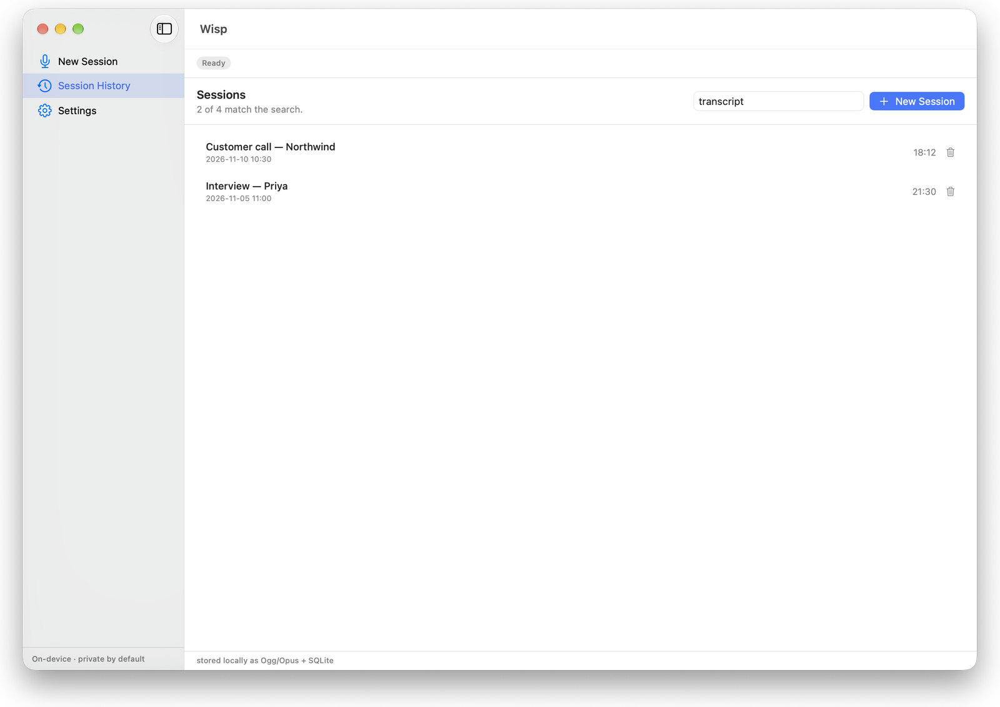
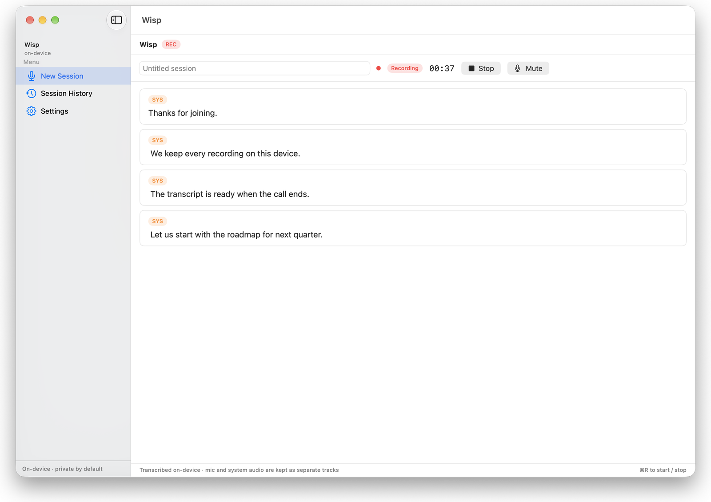
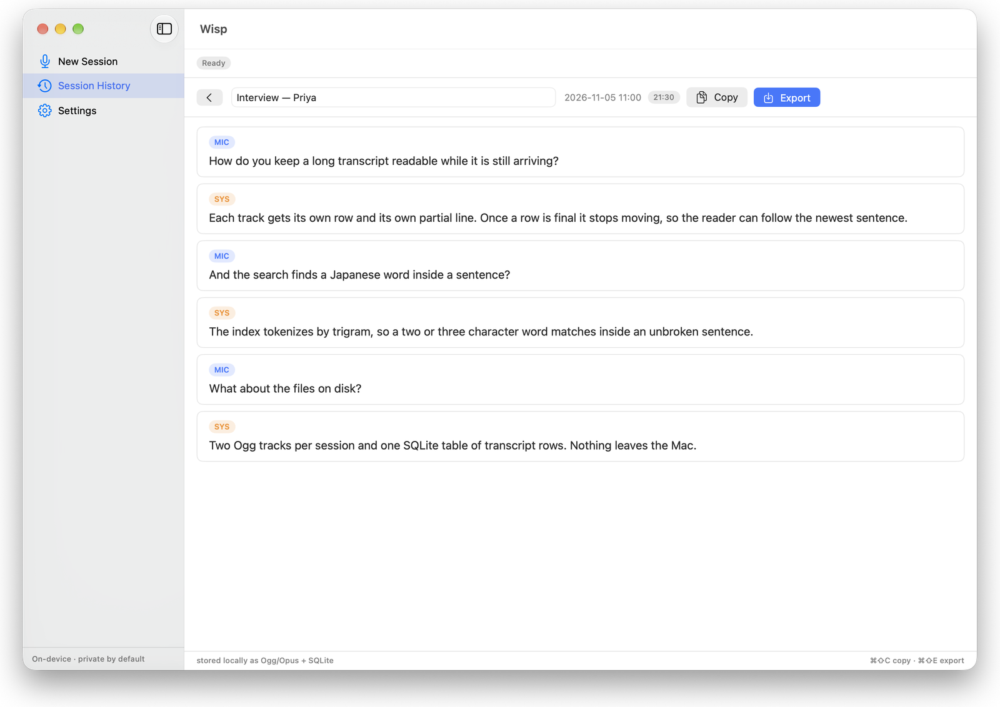
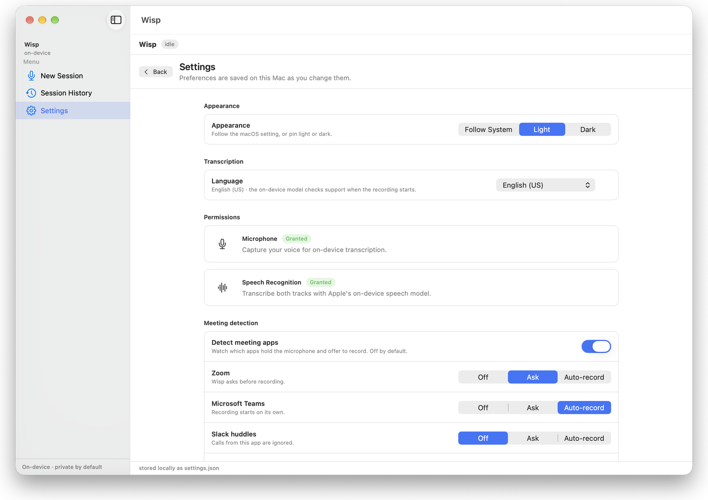

Fully offline
Audio and transcripts stay on your device. Turn off Wi-Fi and Wisp keeps working the same way.
Wisp records your microphone and the other side of the call at the same time, then transcribes both with Apple's on-device speech model. Search the transcripts in one library and export them when the call ends.
Apple Silicon · macOS 26 (Tahoe) · on-device transcription
The session library in both appearances, a transcript search, the live recording screen, a saved transcript, and the settings page.






A small, focused app that does one thing well, and keeps it private.
Audio and transcripts stay on your device. Turn off Wi-Fi and Wisp keeps working the same way.
Apple's SpeechAnalyzer turns each track into text as
you speak, and refines each sentence until it settles.
A Core Audio Process Tap captures the meeting app's output as its own track, next to your microphone. Both appear in one transcript with MIC and SYS labels.
Type a word and the library narrows to the sessions that mention it. Short Japanese words of one or two characters match too.
One Swift package: capture and transcription on Apple's frameworks, the interface in SwiftUI. No embedded browser.
Pick light, dark, or the system appearance, and choose the speech
language for the next recording. Both are saved in
settings.json beside the library.
Wisp can watch which apps hold the microphone and offer to record. Set each tool to Off, Ask, or Auto-record. Detection is off until you enable it.
Recordings save as Ogg/Opus and the transcripts as SQLite. Point
WISP_DATA_DIR at another folder to move the whole
library.
No accounts, no telemetry, no servers. Nothing to sign up for.
Two audio streams in, one transcript out, every step on your Mac.
A Core Audio Process Tap records system audio while the microphone is captured in parallel. Each source is written to its own Ogg/Opus file.
Each stream runs through Apple's SpeechAnalyzer.
Segments appear while you speak and settle as the engine confirms
them.
The finished transcript lands in the library with its recording. Search it later, copy it with MIC and SYS labels, or export Markdown with YAML frontmatter.
Core Audio Process Tap --+
Microphone input --------+--> WispAudioKit --+--> SpeechAnalyzer
|
+--> Ogg/Opus recordings
SpeechAnalyzer --> SwiftUI app --> sessions.db (SQLite)
Wisp has no cloud backend to send audio to. Capture, transcription, and storage all happen locally, and the app contains no networking code.
Open-source and free, built for Apple Silicon Macs on macOS 26.
On the roadmap: export to SRT and JSON, and speaker diarization within a single channel.